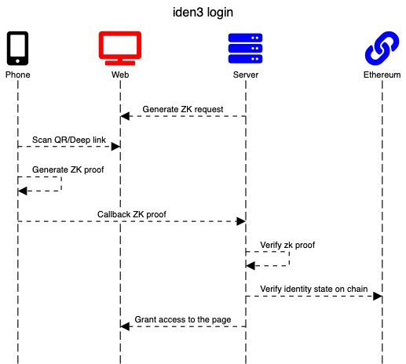

Server-side Login (ZKP Login)
Introduction
Iden3 is a Self-Sovereign Identity (SSI) solution that allows users to leverage their pre-existing validated identities. With SSI, they are able to prove they are who they claim to be based on the zero-knowledge proofs. One of the direct applications of the iden3 technology is to allow web applications to reuse these identities for logging into their portals.
Login Workflow

In a simple example, an application requests a user identifier; this is done through the zero-knowledge proof (zk proof) generation. The server generates an authentication request.
Auth request
{
"type": "https://iden3-communication.io/authorization-request/v1",
"data": {
"callbackUrl": "https://test.com/callbackurl",
"audience": "1125GJqgw6YEsKFwj63GY87MMxPL9kwDKxPUiwMLNZ",
"scope": [
{
"circuit_id": "auth",
"type": "zeroknowledge",
"rules": {
"challenge": 12345
}
}
]
}
}
Shown above is an example of an authorization request. Scope field is a set of objects that describes an array of proofs that must be generated on a user device and presented later. Each scope member has a unique definition of a circuit that must be used and a set of rules (public inputs) that must be applied.
This message can be delivered to a user through different communication channels: QR code, email, deep-linking, etc. On scanning, mobile needs to implement the following:
- Parse the authorization request and understand which proof handler it should use.
- Resolve the verifier identifier if required.
- Generate proofs using a specific handler. It can be a signature proof or a zero-knowledge proof.
- Prepare an authentication response message.
On mobile, a user generates the ZK proof using auth circuit that will prove identity ownership, and send the response to the callback URL.
Auth response
{
"type": "https://iden3-communication.io/authorization-response/v1",
"data": {
"scope": [
{
"type": "zeroknowledge",
"circuit_id": "auth",
"pub_signals": [
"371135506535866236563870411357090963344408827476607986362864968105378316288",
"12345",
"16751774198505232045539489584666775489135471631443877047826295522719290880931"
],
"proof_data": {
"pi_a": [
"8286889681087188684411199510889276918687181609540093440568310458198317956303",
"20120810686068956496055592376395897424117861934161580256832624025185006492545",
"1"
],
"pi_b": [
[
"8781021494687726640921078755116610543888920881180197598360798979078295904948",
"19202155147447713148677957576892776380573753514701598304555554559013661311518"
],
[
"15726655173394887666308034684678118482468533753607200826879522418086507576197",
"16663572050292231627606042532825469225281493999513959929720171494729819874292"
],
[
"1",
"0"
]
],
"pi_c": [
"9723779257940517259310236863517792034982122114581325631102251752415874164616",
"3242951480985471018890459433562773969741463856458716743271162635077379852479",
"1"
],
"protocol": "groth16"
}
}
]
}
}
The client, after receiving an authorization response, performs the verification process:
- Verification with zero-knowledge proof.
- Extraction of metadata (auth and circuit-specific).
- Verification of the user identity states.
- Verification of the circuit's public inputs (e.g. issuer state).
Authentication based on Zero-knowledge Proof
ZK proof is based on the Circom 2.0 language.
Auth Circuit Repository: auth
The circuit verifies that the user is the owner of the identity and his auth key is not revoked in the provided user state.
Prerequisites
The identity wallet should be installed.
Integration
Back-end
Generate Auth Request
request := auth.CreateAuthorizationRequest("<challenge>","<verifier identity|app-url>", "<callbackURI>") // create auth request
Validate Auth Request
// unpack raw message
message, err := packer.Unpack(msgBytes)
// call library to verify zkp proofs
err = auth.VerifyProofs(message)
// extract metadata
token, err := auth.ExtractMetadata(message)
// verify state
stateInfo, err := token.VerifyState(ctx.Background(),"< rpc url >", "< state contract address >")
In future releases of the auth library, the verification procedure will be simplified and optimized for a verifier.
Front-end
On the front-end, you need to embed a button to initiate the login process. After this button is pressed, the front-end makes a request to the back-end to generate an authentication request and displays it in the QR code. When a user scans the QR code, the phone generates a zk proof and sends this proof to the call-back URL from the QR code. Currently, we are working on the js-iden3-auth library.
Tutorial: A Simple Go Application
For this, we need a web server with two endpoints:
- GET /sign-in should return auth request
- POST /call-back endpoint to receive a callback request from the phone and validate the same
Let us write a simple web server:
func main() {
http.HandleFunc("/sign-in", signIn)
http.HandleFunc("/call-back", callBack)
http.ListenAndServe(":8001", nil)
}
func signIn(w http.ResponseWriter, req *http.Request) {
}
func callBack(w http.ResponseWriter, req *http.Request) {
}
Auth Package
Add the authorization package to the project.
go get https://github.com/iden3/go-iden3-auth
Sign-in
To generate a zk auth request, we need a callback URL where we will receive a response from the mobile application along with an authentication response and the verifier's identity.
The go-iden3-auth library contains a method for generating the authentication request.
[Description]
func CreateAuthorizationRequest(challenge int64, aud, callbackURL string) *types.AuthorizationMessageRequest
Now, we are ready to generate the auth request:
const CallBackUrl = "http:localhost:8001/call-back"
const VerifierIdentity = "1125GJqgw6YEsKFwj63GY87MMxPL9kwDKxPUiwMLNZ"
func signIn(w http.ResponseWriter, req *http.Request) {
request := auth.CreateAuthorizationRequest(10, VerifierIdentity, callBackURI)
msgBytes, _ := json.Marshal(request) // error handling ommited for simplification
w.Header().Set("Content-Type", "application/json")
w.WriteHeader(http.StatusOK)
w.Write(msgBytes)
}
Callback
When we receive a callback request with a zk response, to validate, we need to take the following actions:
- Validate zk proof and make sure that the proof is valid.
- Validate identity's state on-chain so as to verify that the user identity state is valid and his/her auth keys are not revoked.
First, let’s validate the zk proof. For this, we have the following function:
func VerifyProofs(message types.Message) (err error)
But before we can call it, we need to unpack raw bytes to a message. Packer can be used to process the encrypted message for future releases.
p := &packer.PlainMessagePacker{}
// Unpack msg
message, _ := p.Unpack(msgBytes)
// verify zkp
proofErr := auth.VerifyProofs(message)
Now that the zk proof is verified, we can check the identity's status on-chain.
First, we need access the RPC URL and the address of the identity's smart contract:
const rpc = "https://polygon-mumbai.infura.io/v3/<your-token>"
const IdentityContract = "0x3e95a7B12e8905E01126E1beA3F1a52D1624A725"
Before we can verify a state, we need to extract the metadata and then verify it on-chain.
token, _:= auth.ExtractMetadata(message)
// verify match identifier with the state on chain
stateInfo, err := token.VerifyState(ctx, rpc, IdentityContract)
Verification Procedure
Zero-knowledge Proof Verification
Groth16 proofs are now supported by the auth library.
Verification keys for the circuits can be referred to from the library. In the future, they can be resolved from the circuit registries.
Extraction of Metadata
Each circuit has a schema of its public inputs that links the public signal name to its position in the resulting array. This allows extracting user identifiers and challenges from the proof for authentication.
Other signals are added to the user token (scope field) as attributes of a specific circuit. The circuit's public signal schemas are known by this library or can be retrieved from a registry.
Verification of User Identity States
The blockchain verification algorithm is used to:
-
Get state from the blockchain (address of the id state contract and URL must be provided by the caller of the library):
- Empty State is Returned: It indicates that the identity state has not been updated or the updated state has not been published. We need to compare the id with the state. If they are different, it is not the genesis state of the identity and it is not valid.
- Non-empty State is Returned and Equals to the State Provided in Proof: This indicates that the user state is new and we work with the latest user state.
- Non-empty State is Returned and is not Equal to the State Provided in Proof: Gets the time of the state transition. The verification party can make a decision if it can accept this state based on that time frame.
-
Accept or reject the provided state (The verification party makes this decision).
Verification of Circuit's Public Signals
This verification includes the following: 1. Check if the issuer states of the provided claim proofs are published on the blockchain (same as for identity state). 2. Check the query signals so that the claim schema and the specific values can be verified.